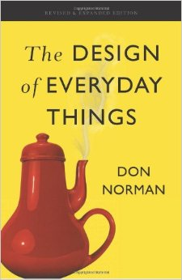

我曾经在一篇文章里谈过关于设计的问题，然而那篇文章由于标题不够醒目，可能很多人没有注意看。我觉得现在有必要把里面的内容专门提出来讲一下，因为设计在我的心目中具有至关重要的地位，却被很多计算机科学家和程序员所轻视。
我觉得自己不但是一个计算机科学家和程序员，在很大程度上我还是一个设计师。我不但是一个程序语言的设计师，而且是其它很多东西的设计师。我设计的东西不但常常比别人的简洁好用，而且我经常直接看出其他人的设计里面的问题。我写的代码不仅自己容易看懂，而且别人也容易理解。我有时候受命修补前人的BUG，结果没法看懂他们的代码。在这种情况下，我的解决方案是推翻重写。经我重写之后的代码，不仅没有BUG，而且简洁很多。
很多人自己的设计有问题，太复杂不易用，到头来却把责任推在用户身上，使用类似“皇帝的新装”的技巧，让用户有口难言。之前一篇文章提到的严重交通事故，就是一个设计问题，却被很多人归结为“人为错误”。这种出人命的事情都这么难引起人们对设计的关注，就更不要说软件行业那些无关性命的恼人之处了。有些人写的代码过度复杂，BUG众多，却仿佛觉得自己可以评估其他人的智商，打心眼里觉得自己是专家，看不懂他代码的人都是笨蛋。
很多程序员有意把“用户”和自己区别开来，好像程序员应该高人一等，不能以用户的标准。所以他们觉得程序员就是应该会用各种难用的工具，难用的操作系统，程序语言，编辑器，…… 他们觉得只要你追求这些东西的“易用性”或者“直观性”，就说明你智商有问题。只要你说某个东西太复杂，另一个东西好用些，他们就会跟你说：“专家才用这个，你那个是菜鸟用的。” 这些人不明白，程序员其实也是用户，而且他们是自己的代码的用户，每一次调用自己写的函数，自己都是自己的用户。可是这种鄙视用户的风气之胜行，带来了整个行业不但设计过度复杂，而且以复杂为豪的局面。
经常有人自豪的声称自己的项目有多少万行代码，仿佛代码的行数是衡量一个软件质量的标准，行数越多质量越好，然而事实却恰恰相反。就像《小王子》作者说的：“一个设计师知道他达到了完美，并不是当他不能再加进任何东西，而是当没有任何东西可以被去掉。”
如果你跟我一样关心设计，却发现身边的人喜欢显示自己能搞懂复杂的东西，跟你说容易的东西都是菜鸟用的，那么你需要一个朋友。书籍是人类最好的朋友，因为它的作者可以跨越时间和空间的限制，给你最需要的支持和鼓励。这就是当我阅读这本1988年出版的《The Design of Everyday Things》（简称DOET）时的感觉。我觉得，终于有人懂我了！有趣的是，它的作者 Don Norman 曾经是 Apple Fellow，也是《The Unix-Haters Handbook》一书序言的作者。

DOET 不但包含并且支持了我的博文《黑客文化的精髓》以及《程序语言与……》里的基本观点，而且提出了比《什么是“对用户友好”》更精辟可行的解决方案。
我觉得这应该是每个程序员必读的书籍。为什么每个程序员必读呢？因为虽然这本书是设计类专业的必读书籍，而计算机及其编程语言和工具，其实才是作者指出的缺乏设计思想的“重灾区”。看了它，你会发现很多所谓的“人为错误”，其实是工具的设计不合理造成的。一个设计良好的工具，应该只需要很少量的文档甚至不需要文档。这本书将提供给你改进一切事物的原则和灵感。你会恢复你的人性。
值得一提的是，虽然 Don Norman 曾经是 Apple Fellow，但我觉得 Apple 产品设计的人性化程度与 Norman 大叔的思维高度还是有一定的差距的。因为我看了这书之后，立马发现了iPhone的一些设计问题。
如果你跟我一样不想用眼睛看书，可以到 Audible 买本有声书来听。